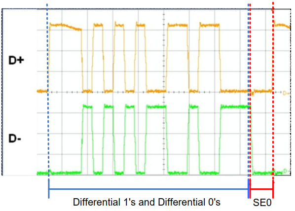

USB理论知识¶
Host¶
USB 系统包括一台主机（一般是一台个人计算机（ PC））和多个通过分层星形拓扑连接的外围设备。该拓扑也可以包括集线器，从而能够提供更多与 USB 系统的连接点。主机本身包含两个组件，即主控制器和根集线器。主控制器是具有软件驱动层的硬件芯片组，用于执行以下任务：
- 检测 USB 设备的插入和拔出
- 管理主机和设备间的数据流
- 提供并管理所连接设备的电源
- 监视总线上的活动
主机可以有一个或多个主控制器。通过使用外部 USB 集线器，每个控制器最多可以连接 127 个设备。根集线器是连接到主控制器的内部集线器，并且作为 USB 系统中的第一个连接层。在 PC 上，目前存在多个端口。这些端口是 PC 中根集线器的一部分。为简便起见，请通过一个被称为主机的“黑盒子”抽象视图来了解根集线器和主控制器。
Device¶
USB 设备包括一个或多个设备功能，例如鼠标、键盘或音频设备。主机为每个设备提供了一个地址，用于设备与主机间的数据通信。 USB 设备的通信通过管道实现。这些管道是主控制器到可寻址缓冲区（称为端点）间的连接路径。一个端点会保存收到来自主机的数据并保存将要发送给主机的数据。一个 USB 设备能够具有多个端点，并且每个端点都有相应的管道。
!
Tip
有两类特殊的 USB 设备，分别是 USB 集线器设备(USB Hub)和 USB OTG 设备。
传输类型¶
USB 系统中的管道共有两种，分别为控制管道和数据管道。 USB 规范中定义了四种不同的数据传输类型。使用哪个管道由数据传输类型决定。
- 控制传输： 用于将指令发送到设备上、进行查询并且配置设备。该传输使用了控制管道。
- 中断传输： 用于发送少量的突发性数据，并且保证传输延迟最小。该传输使用了数据管道。
- 批量传输： 利用了全部可用的 USB 带宽来传输大量数据，但传输速度或延迟得不到保证。该传输使用了数据管道。
- 同步传输： 数据传输采用了得到保证的传输速率。随着传输延迟和总线带宽的保证，传输时间也得到保证。同步传输没有错误纠正功能，因此在重新发送有误的数据包过程中，不能停止传输。 该传输使用了数据管道。
每个设备都有一个控制管道，用于控制发送给设备或从设备接收信息的状况。设备可以有任意个数据管道，通过中断、批量或同步传输类型进行数据传输。控制管道是 USB 系统中唯一一个双向管道，所有的数据管道均是单向的。
每个端点均可通过设备地址（由主机分配）和端点编号（由设备分配）进行访问。信息被发送给设备时，会通过令牌数据包来识别设备地址和端点编号。在传输数据前，主机将发送该令牌数据包。
枚举¶
USB 设备首次与主机相连时，将启动 USB 枚举过程。枚举是设备和主机间进行的信息交换过程，包含用于识别设备的信息。此外，枚举过程还分配设备地址、读取描述符（作为提供有关设备信息的数据结构），并分配和加载设备驱动程序。整个过程需要数秒时间。完成该过程后，设备可以向主机传输数据。
以下两个文件属于主机端，用在枚举和加载驱动程序的过程中。
- .INF :包含了安装设备时所需全部信息（驱动程序的名称和位置、 Windows 注册信息和驱动程序版本信息）的文本文件。
- .SYS :驱动程序需要该文件才可有效与 USB 设备进行通信。
设备被枚举后， 主机将负责总线上的全部设备之间的数据通信流向。因此，如果没有主控制器的请求，所有设备均无法传输数据。
主控制器类型¶
系统中只能有一个主机，并且与设备进行的通信是从主机的角度进行的。主机是“ 上行” 组件，设备则是“ 下行” 组件。
可以将一个或多个设备连接至一个主机。每个设备均有一个地址，并且会对寻址它的主机指令做出响应。设备预计具有某种形式的功能，并不简单作为一个被动组件。设备具有一个上行端口。端口是设备上的 USB 物理连接点。
数据从主机转移到外设的操作是 OUT 传输。数据从外设转移到主机的操作是 IN 传输。主机（尤其是主控制器）控制着所有通信并向设备发出指令。
共有三种常见的 USB 主控制器：
- 通用主控制器接口（ UHCI）： 由 Intel 生产，适用于 USB 1.0 和 USB 1.1。使用 UHCI 时需要得到 Intel 的许可。该控制器支持低速模式和全速模式。
- 开放主控制器接口（ OHCI）： 由 Compaq、 Microsoft 和 National Semiconductor 生产， 适用于 USB 1.0 和 1.1。该控制器支持低速模式和全速模式， 并且它的效率比 UHCI 更高， 因为可以执行更多硬件功能。
- 扩展型主控制器接口（ EHCI）： 在 USB-IF 要求发布单一主控制器规范后，已经生产了该控制器，它适用于 USB2.0。 EHCI 仅支持高速传输，并且将低速和全速传输委托给 OHCI 或 UHCI 控制器执行。
集线器¶
集线器是一个专用设备，允许主机同总线上的多个外设进行通信。与 USB 外设（例如鼠标）具有实际功能不同，集线器设备是透明的，并且作为直通连接使用。集线器也作为主机和设备间的通道。集线器具有多个连接点，从而可以将多个设备连接到一个主机上。一个集线器可以将与下行设备进行的通信重复使用到一个上行端口和最多七个下行端口。 但集线器并没有主机功能。
拓扑结构¶
通过使用集线器最多能够将 127 个设备连接至主控制器上。连接设备的数目限制由 USB 协议决定，它限制设备地址为 7 位。另外，由于集线器的时间限制和电缆传播的延迟，因此最多只能将五个集线器链接在一起，它表示集线器和设备的链接限制。随着集线器的链接限制，层次系统也限制为七层。
从另一个角度观察 USB 接口，即将其分为不同层次。总线接口层提供了物理连接、电气信号和数据包连接。该层由设备硬件处理，并通过设备的外部接口完成。设备层是 USB 系统软件的视图，用于执行 USB 操作，如发送和接收信息。该层的操作由设备的内部串行接口引擎完成。最后，功能层包括有关软件的事务。它是 USB 设备的一部分，用于处理所接收到的信息，或者收集数据并将其传输给主机。 下图表示的是该抽象接口。
传输编码¶
VBUS 线为所有相连设备提供了恒定的 4.40 ~ 5.25 V 电源。当 USB 为设备提供 5.25 V 电源时，数据线（ D+和 D-）在 3.3 V 电压下工作。 USB 接口使用不归零反转（ NRZI）的差分传输，信号使用位填充方法进行编码并通过双绞线传输。
NRZI 编码是一种映射一个二进制信号的方法，以便通过某个介质（在这里是 USB 线缆）传输该信号。在该编码方案中，如果电压电平不变，则表示逻辑 1；如果电压电平变化，则表示逻辑 0，如图 9 所示。顶部是将要通过 USB 传送的数据。底部是编码的 NRZI 数据。
通过在 7 个连续的逻辑 1 后面插入一个逻辑 0 可以实现位填充。位填充是为了通过保持锁相环（ PLL）对 USB 硬件进行同步化。如果该数据内有太多的逻辑 1，那么 NRZI 编码流中将没有足够用于实现同步化的转换。 USB 硬件上的接收器会自动检测额外位，并忽略它。该额外位填充是引起 USB 上的额外开销的原因。 下图显示的是一个带有位填充的 NRZI 数据的示例。请注意， “Data to Send” （将要发送的数据）流为 8 个逻辑 1。在该编码数据中，在第六个逻辑 1 后面插入了一个逻辑 0。这样，第七和第八个逻辑 1 将位于逻辑 0 后。
Tip
USB 的数据传输方式为： LSB在前，MSB在后。
总线状态¶
USB 通信过程经过了 D+ 和 D- 线上的各种不同信号状态。某些状态发送数据，而其他则作为特殊信号状态使用。下面内容介绍了这些状态：
- 差分 0 和差分 1： 这两个状态用于通过 USB 进行的通用数据通信。当 D+ 线为高电平、 D- 线为低电平时，该状态为差分 1。当 D+ 线为低电平、 D- 线为高电平时，该状态为差分 0。
- J 状态和 K 状态： 除了差分信号外， USB 规范还定义了其他两个差分状态： J 状态和 K 状态。它们的定义由设备速度决定。在全速和高速设备上， J 状态为差分 1 而 K 状态是差分 0。在低速设备上，该情况则相反。
- 单端 0（ SE0）： 在 D+ 和 D- 均为低电平时所发生的状态。该状态表示一个复位、断连或数据包的结束。
- 单端 1（ SE1）： 在 D+ 和 D- 均为高电平时发生的状态。不会故意生成该状态，并且不能在 USB 设计中出现。
- 闲置： 必须在发送一个数据包的前后发生的状态。如果一个数据线为低电平，而另一个数据线为高电平，则表示闲置状态。高电平和低电平的定义由设备的速度决定。在全速设备上，闲置状态是指 D+ 为高电平、 D- 为低电平。在低速设备上，该情况则相反。
- 恢复： 用于使设备从挂起状态唤醒。通过发送一个 K 状态实现该操作。
- 数据包的开始（ SOP）： 当 D+ 和 D- 线从闲置状态转换到 K 状态时，将在开始低速或全速数据包前发生。
- 数据包的结束（ EOP）： 在低速或全速数据包结束时发生。当 SE0 状态持续两位时间以及 J 状态持续 1 位时间时，将发生 EOP。
- 复位： 在 SE0 状态持续 10 ms 时发生。在 SE0 至少持续 2.5 ms 后，该设备会复位，并开始进入复位状态。
- 保持活动（ Keep Alive）： 在低速设备中使用的信号。低速设备缺少了一个帧起始数据包（用于防止挂起状态）。每次经过 1 ms，它们都会使用一个 EOP 来防止设备进入挂起状态。

硬件接口¶
需要将两个主硬件模块连接到 USB 上：一个收发器（又被称为 PHY — 物理层），一个串行接口引擎（又被称为SIE） 。该收发器提供了 USB 连接器和芯片电路（用于控制 USB 通信）间的硬件接口。 SIE 是 USB 硬件的内核。它执行多种功能，如解码和编码 USB 数据、错误纠正、位填充和发信号。 SIE 可以采取不同形式。与收发器不同，它们不受 USB 规范的限制。实际上，有些设备使用基于软件的 SIE 以降低成本，但也有其他设备使用基于硬件的 SIE。
USB速度¶
USB 规范已经为 USB 系统定义了以下四种速度模式： 低速（ Low-Speed） 、全速（ Full-Speed） 、高速（ Hi-Speed）和超高速（ SuperSpeed）。
新型主机一直能同低速设备进行通信。例如，高速主机能够与低速设备进行通信，但全速主机并不能同高速设备进行通信。
低速、全速和高速设备的速率分别为 1.5 Mb/s、 12 Mb/s 和 480 Mb/s。但是，这些指的是总线速率，并不是数据速率。 实际的数据速率受总线加载速度、传输类型、开销、操作系统等因素的影响。数据传输则受以下内容的限制：
- 低速设备
- 例如：键盘、鼠标和游戏等外设
- 总线速率： 1.5 Mb/s
- 最大的有效数据速率： 800 B/s
- 全速设备
- 例如：手机、音频设备和压缩视频
- 总线速率： 12 Mb/s
- 最大的有效数据速率： 1.2 MB/s
- 高速设备
- 例如：视频、影像和存储设备
- 总线速率： 480 Mb/s
- 最大的有效数据速率： 53 MB/s
识别设备的速度模式¶
- 对于设备(Device)而言，低速设备、全速设备、高速设备；
- 对于主机(Host)而言，全速主机、高速主机两种。
建立好了 USB 设备和主机间的连接后，需要使用 D+或 D-信号线上的上拉电阻来检测设备的速度。 D+信号线上的 1.5kΩ 大小的上拉电阻表示所连接的是一个全速设备， D-线上 1.5 kΩ 大小的上拉电阻表示所连接的是一个低速设备。
高速设备都是作为全速设备进行初始化，因此它们在 D+信号线上也使用了一个 1.5 kΩ 大小的上拉电阻。设备连接好后， 会在枚举的复位阶段中发出 J 状态和 K 状态序列。如果集线器支持高速设备，则不需要使用上拉电阻。
USB 进行枚举时需要使用上拉电阻。否则， USB 会认为总线上没有连接任意设备。部分设备要求在 D+/D-信号线上使用一个外部上拉电阻。
DUSB 2.0 设备经常被误解为高速 USB 设备。所有高速设备都符合 USB 2.0 规范，这是因为 USB 2.0 规范支持高速模式。 USB 2.0 规范还包含了全速和低速设备。
这些速度也影响到有关 位时间 的 USB 信号（如数据包结束（ EOP）信号）。低速和全速 USB 设备使用了频率为48 MHz 的时钟执行 SIE 操作，并执行使用其他时钟源的 USB 操作。该 48 MHz 时钟和总线速度决定了 USB 位时间：
- 全速： 时钟频率/总线速度 = 48 MHz / 12 Mb/s 时， USB 位时间为 4 个时钟周期。
- 低速： 时钟频率/总线速度 = 48 MHz / 1.5 Mb/s 时， USB 位时间为 32 个时钟周期。
USB电源¶
作为 USB 电源时， USB 设备可被划分为两种设备类型：总线供电和自供电。
总线供电是 USB 设计的一个优势。由于设备通过总线供电，因此不需要使用笨重的内部或外部电源，它仍能够维持自身操作。总线可由主机或集线器供电。使用某个总线供电的设备时，用户将设备配置为某种状态前必须考虑其功耗。即设备枚举完成后，必须在第一次将设备连接到总线到主机将 SET_CONFIGURATION 命令传输给设备的这段时间内检查其功耗。设备被配置前不能消耗超过 100 mA 的电流（即 USB 规范中为低速、全速或高速设备定义为一个负载单位）。在配置过程中，设备要求一个预算功耗。总线供电的设备共有以下两种：高功耗和低功耗设备。低功耗设备最多消耗 100 mA 的电流，高功耗设备最多消耗 500 mA 的电流。消耗的电流超过 500 mA 的设备要自供电。
自供电设备通过使用外部电源（如直流电源适配器或电池）为自己供电。自供电设备在进行设计的过程中需要考虑到一些注意事项。 USB 规范要求自供电设备一直监控自己的 VBUS 线。 VBUS 不存在的时间内，设备必须断开提供给 D+/D-线上的上拉电阻的电源，从而防止向主机或集线器供电。 否则，会导致 USB 合规性测试发生失败。但是自供电集线器能够从总线获得最多 100 mA 的电流。
设备还能结合两种电源模式，并成为一个总线供电和自供电的设备。常见的例子是设备使用电池。设备通常是自供电的；但使用 VBUS 给电池充电，并且在电池电量发生变化时给设备供电。在技术方面，该设备是一个自供电设备，如USB 描述符中显示，但该设备仍要求来自主机的预算电源。同自供电设备相似，这些混合设计中仍需要监控 VBUS 大小，并且仍会断开提供给 D+/D-线上的上拉电阻的电源。在本应用中，需要实现一部分电源管理系统类型，以监控电池的电压、充电状态，并控制电池电源和外部电源间的切换。
此外，无论设备的供电方式如何，所有 USB 设备都必须考虑到它们的暂停电流。设备的暂停电流是指在主机处于挂起模式（又称待机模式）时由 VBUS 提供的电流。如果总线在 3 ms 时间内没有进行任意操作，设备会进入挂起模式。即使没有进行任意数据传输操作，主机仍会发出“ 帧开始” （ SOF）令牌，以防止设备进入挂起模式。但低速设备却没有 SOF 数据包，因此这种设备是一个例外。总线上不进行低速数据的传输时，低速设备每经过 1 ms 都会发送“ 数据包结束” （ EOP）信号，将其作为“ 保持活动” 信号。总线休闲时，设备必须进入挂起模式，并消耗不大于 2.5 mA 的电流。为满足该要求，设计师必须保证设备进入挂起状态前已经关闭了各个 LED 和其他电源域。一旦检测到总线上发生任何操作， USB 设备都会退出挂起状态。如果设备具有远程唤醒功能，它可以向主机发送恢复请求，然后等待主机确认该请求，而不是等待主机进行恢复。更多有关停止电流的信息，请参考 USB 规范中第 11.4.3 节的内容。
设计师需要了解各种同 USB 电源相对应的 USB 状态。这些状态通常出现在 USB 文档中，并适用于 USB 设备的枚举操作。
USB设备在枚举完成之前，控制器会有一系列的状态变化。这些状态分别是：连接状态(attached)、供电状态(powered)、默认状态(default)、地址状态(address)、配置状态(configures)、挂起状态(suspended)。这些状态都可以根据具体的 IC 设计情况，配置寄存器，让 USB 控制器产生事件中断。
- 连接状态(attached)： 当将某个设备插入到主机/集线器，但主机/集线器不给 VBUS 线供电时，会出现这种状态。它通常在集线器检测到一个过流事件时出现。虽然仍连接着设备，但主机移除了供给它的电源。
- 供电状态(powered)： 某个设备被连接到 USB 上并得到供电，但仍未接收到一个复位请求。
- 默认状态(default)： 某个设备被连接到 USB 上、得到供电，并且由主机进行了复位。这时，设备没有任何设备地址。 设备会响应地址 0。
- 地址状态(address)： 某个设备被连接到 USB、得到供电、被复位，并且有一个唯一的地址。但是设备仍未得到配置。
- 配置状态(configures)： 设备已经连接到 USB、得到供电、被复位、具有唯一的地址、得到配置，但尚未进入挂起状态。此时，总线供电设备能够消耗超过 100 mA 的电流。
- 挂起状态(suspended)： 如上面所述，设备已经建立好了连接，并且得到配置，但在 3 ms 时间内不会进行任意总线操作。
USB 规范（ USB 规范中的图 9-1）具有一个框图，描述了这些电源模式的相关性和切换性。
对于低速、全速和高速 USB 设备， USB 的功耗会以 2 mA 的单位进行枚举。例如，需要消耗 100 mA 电流的全速设备在进行枚举时将发送数值 50。
开发 USB 设计时，请考虑您的设备消耗总线的电流。根集线器由主机 PC 的电源供电。如果主机被连接到交流电源上，则 USB 规范要求主机为集线器上的每一个端口提供 500 mA 的电流。这样能将总线供电设备上的电流消耗限制在500 mA。如果主机 PC 由电池供电，它可以为集线器上的每一端口提供 100 mA 或 500 mA 的电流。将设备插入到总线供电的集线器时，该设备必须是低功耗设备，并且消耗电流不能超过 100 mA。总线供电的集线器共有 500 mA 的电流可供给所有所连接的设备使用。
USB端点¶
根据 USB 规范，设备端点是 USB 设备中一个独特的可寻址部分，它作为主机和设备间通信流的信息源或库。枚举过程中，设备向默认地址做出响应。该事件在主机读取端点描述符等其他描述符信息之前发生。在该过程中，需要使用一套专用的端点用于与设备进行通信。这些专用的端点（统称为控制端点或端点 0）被定义为端点 0 IN 和端点 0 OUT。虽然端点 0 IN 和端点 0 OUT 是两个不同的端点，但对开发者来说，它们的构建和运行方式是一样的。每一个 USB 设备都需要支持端点 0。因此，该端点不需要使用独立的描述符。
除了端点 0 外，特定设备所支持的端点数量将由各自的设计要求决定。简单的设计（如鼠标）可能仅要一个 IN 端点。复杂的设计可能需要多个数据端点。 USB 规范对高速和全速设备的端点数量进行了限制，即每个方向最多使用 16 个端点（ 16 个 IN、 16 个 OUT，总共为 32 个），其中不包含控制端点 0 IN 和 0 OUT 在内。低速设备仅能使用两个端点。
USB 类设备可对端点数量设定更严格的限制。例如，低速人机界面设备（ HID）设计的端点可能不超过两个 — 通常有一个 IN 端点和一个 OUT 端点。数据端点本身具有双向特性。只有对它们进行配置后才支持单向传输（具有单向特性）。例如，端点 1 可作为 IN 或 OUT 端点使用。设备的描述符将正式使其成为一个 IN 端点。
各端点使用循环冗余校验（ CRC）来检测传输中发生的错误。 CRC 是一个用于检测错误的计算值。 USB 规范中对实际的计算公式进行了解释，这些计算由 USB 硬件进行，这样可确保能够发出正确的响应。数据操作的接收方对数据进行 CRC 检查。如果两者匹配，那么接收方将发出一个 ACK。如果两者匹配失败，便不会发出任何握手数据包。在这种情况下，发送方将重新发送数据。
USB 规范定义了四种端点，并根据类型以及所支持的设备速度限制了数据包的尺寸。根据设计要求，开发者使用端点描述符指出端点类型以及数据包最大尺寸。四种端点和各自的特性如下：
- 控制端点 — 这些端点支持控制传输（即所有设备支持的传输）。控制传输通过总线发送和接收设备的信息。它的优点是可以保证传输准确。它能够立即检测到错误的发生，并重新发送数据。 控制传输在低速和全速设备上使用 10% 的保留带宽（在高速设备上为 20%）并提供 USB 系统级控制。
- 中断端点 — 这些端点支持中断传输。这种传输非常适合需要使用高度可靠的方式来传输少量数据的设备。它通常用于HID 设计。这种传输的名称可引起误会。实际上，它并不是一个中断，但使用了一个轮询率。进行该传输时，主机将在预计时间间隔内检查数据。通过及时检测错误并重新传输数据，该传输可确保数据操作的准确性。在低速和全速设备上，中断传输使用带宽的 90%，而在高速设备上，所用的带宽为 80%。同步端点与其共享该带宽。
中断端点的数据包最大尺寸与设备的速度相关。高速设备支持最大为 1024 字节的数据包。全速设备支持最大为 64 字节的数据包。低速设备支持最大为 8 字节的数据包。 - 批量端点 — 这些端点支持批量传输，即是在高度可变的时间内传输大量数据并且可用任何带宽空间的传输。 它们是USB 设备的最通用传输类型。因为用于批量传输的带宽并不是固定的，该传输的传送时间也是可变的。传送时间取决于总线上的可用带宽，由于该因素，便不能预期实际的传送时间。通过及时检测错误并重新传输数据，该传输可确保数据操作的准确性。批量传输非常适合对时间没有严格要求的大量数据传输。
批量端点的数据包最大尺寸与设备速度相关。高速设备支持最大为 512 字节的数据包。全速设备支持最大为 64 字节的数据包。低速设备不支持批量传输。 - 同步端点 — 这些端点支持同步传输，即具有预定带宽的连续性实时传输。由于同步传输没有错误恢复机制和握手数据包，它们需要支持容忍错误的数据流。错误由 CRC 字段检测，但不会被修改。因此，同步传输可保证传输速度，但以数据的准确性作为代价。流式音乐或视频即是使用同步端点的应用示例，因为我们的耳朵和眼睛通常忽略偶尔被错过的数据。在低速和全速设备上，同步传输使用带宽的 90%（在高速设备上，所用的带宽为 80%），中断传输与其共享该带宽。
高速设备支持最大为 1024 字节的数据包。全速设备支持最大为 1023 字节的数据包。低速设备不支持同步传输。有关同步传输，请注意一些重点内容。 为了保证数据传输，您通常需要使用三个缓冲区，一个正在传输数据、一个已加载数据和一个正在进行加载数据。
端点传输类型的特性如下图：